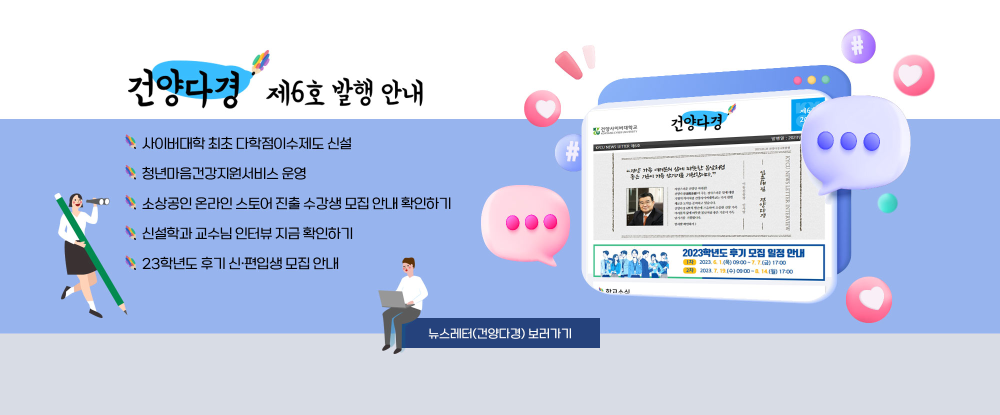
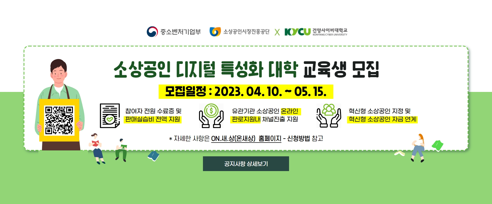
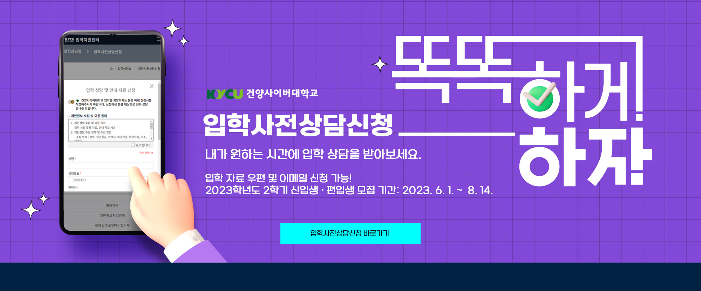

비쥬얼 정지
비쥬얼 재생
![건양사이버대학교 교양과정 프로그램 5월 비교과프로그램 안내 1.6월 멘토 OT: 2023.5.31.(수) 19:00 비교과과정(LMS), 문의.042-722-0048 2.장애학생소통클래스: 2023.5.24.(수) 19:30 구글미트(실시간), 문의.042-722-0049 3.사회복지학과: 사회복지사 1급 시험 대비 특강 2.노인복지학과: 취ㆍ창업 특강/기말고사 특강 3.아동복지학과: 온라인스터디 2차 4.법무행정복지학과: 한국사 특강 5.다문화한국어학과: 목요스터디 기초반ㆍ실습반/한국어표현교육론 과제를 위한 특강 6. 상담심리학과: 직업상담사2급&임상심리사 2급 필기 시험 대비/심리학현장실습1 가계도 그리는 방법/졸업여행 신청/심리학현장실습1 수업신청 7. 행동재활치료학과: 행동재활현장실습 대면 수퍼비전/재학생과 함께하는 학술제 8.심리운동치료학과: 심리운동치료사의 자질과 윤리 특강 9.재난안전소방학과: '산업안전분야의 미래와 전망' 취ㆍ창업 특강 10.IT비즈니스학과: 초보자를 위한 스마트폰 기초 활용 ★비교과프로그램 수강신청 승인은 매일 15시 일괄 승인 됩니다.](img/main/main03.jpg)